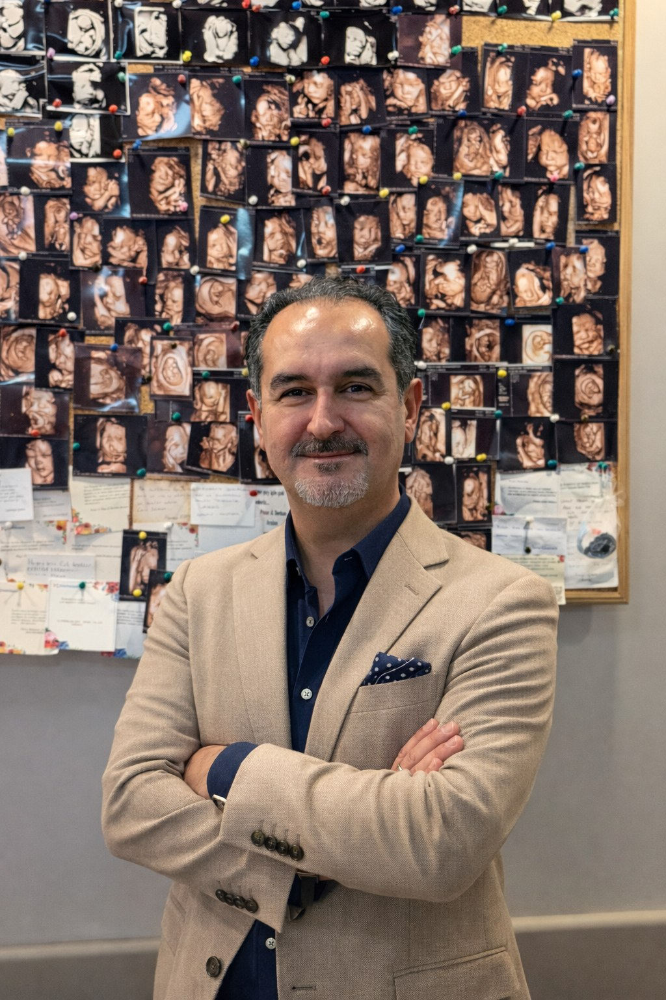

Op. Dr. Umut Yolal, 2 Temmuz 1977'de Adana'da doğdu. Ortaöğreniminin bir bölümünü İsviçre'nin Lozan kentindeki Collège de Béthusy'de tamamladı. 1995 yılında başladığı tıp eğitimini Çukurova Üniversitesi Tıp Fakültesi'nde 2001 yılında Tıp Doktoru unvanı ile tamamladı.
2003–2008 yılları arasında, Türkiye'nin kadın sağlığı alanındaki köklü ve yüksek hasta hacimli eğitim kurumlarından biri olan Ankara Etlik Zübeyde Hanım Kadın Hastalıkları Eğitim ve Araştırma Hastanesi'nde uzmanlık eğitimini tamamlayarak Kadın Hastalıkları ve Doğum Uzmanı unvanını aldı.
Mesleki Deneyim
18 yılı aşkın meslek hayatı boyunca Gaziantep, Mersin ve İstanbul'da kamu ve özel hastanelerde görev yapmış; 2021 yılından bu yana Özel Küçükçekmece Hastanesi'nde hasta kabul etmektedir. Bu süreçte binlerce doğum ve jinekolojik ameliyat gerçekleştirmiş, ayrıca genç hekimlerin ve asistan doktorların eğitimine katkıda bulunmuştur.
Başlıca ilgi ve deneyim alanları şunlardır: ürojinekoloji ve pelvik taban cerrahisi; estetik jinekoloji; laparoskopik (kapalı) jinekolojik ameliyatlar; histeroskopik cerrahi; ürojinekolojik ameliyatlar (idrar kaçırma ve pelvik organ sarkması cerrahisi) ve rahim ağzı hastalıklarının tanı ve tedavisi (kolposkopi, LEEP).
Görev Yaptığı Kurumlar
- 2021 – GünümüzÖzel Küçükçekmece Hastanesi, İstanbul
- 2018 – 2021Özel Florya Hastanesi, İstanbul
- 2017 – 2018Gaziantep Büyükşehir Belediyesi İnayet Topçuoğlu Hastanesi
- 2016 – 2017Özel SEV Amerikan Hastanesi, Gaziantep
- 2011 – 2016Mersin Kadın Doğum ve Çocuk Hastalıkları Hastanesi
- 2008 – 2011Gaziantep İslahiye Devlet Hastanesi
- 2003 – 2008Ankara Etlik Zübeyde Hanım Kadın Hastalıkları EAH — Uzmanlık eğitimi
Eğitim ve Uluslararası Geçerlilik
Tüm diploma ve uzmanlık belgeleri, uluslararası kimlik bilgisi doğrulama sistemi The Electronic Portfolio of International Credentials (EPIC℠) tarafından doğrulanmış ve onaylanmıştır. Ortaöğreniminin bir bölümünü İsviçre'nin Lozan kentinde (Collège de Béthusy) tamamlamıştır.
Diller
Türkçe (ana dil), İngilizce (akıcı), Fransızca ve Almanca.